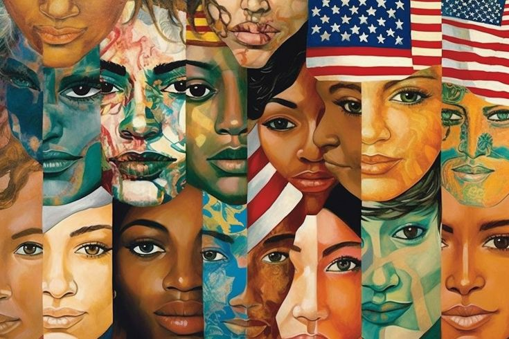
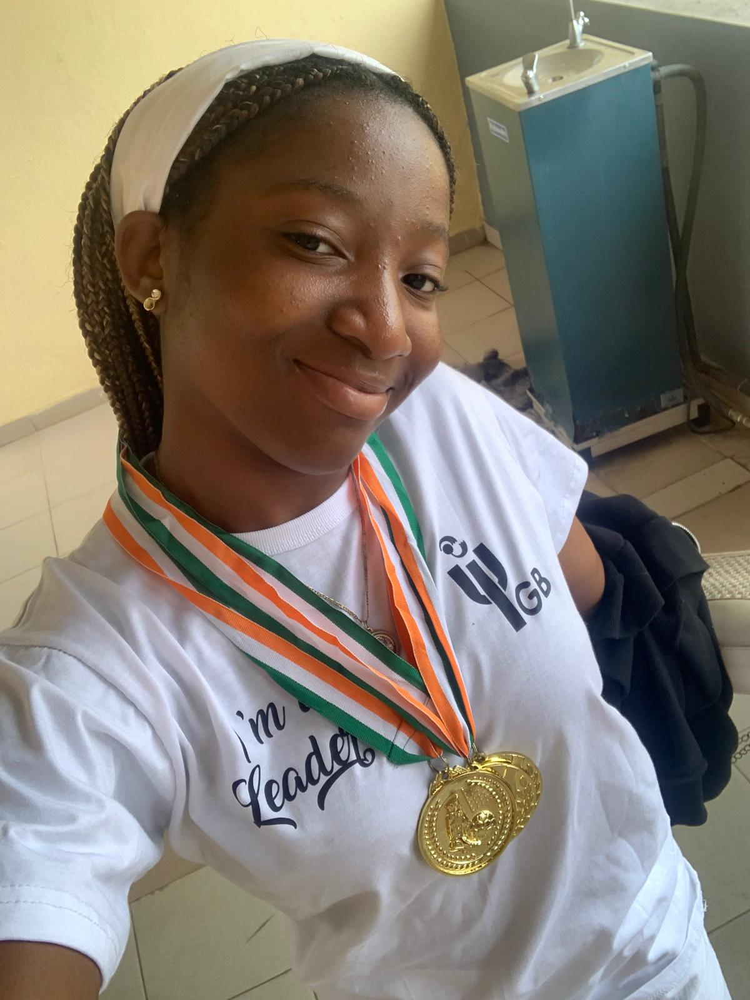
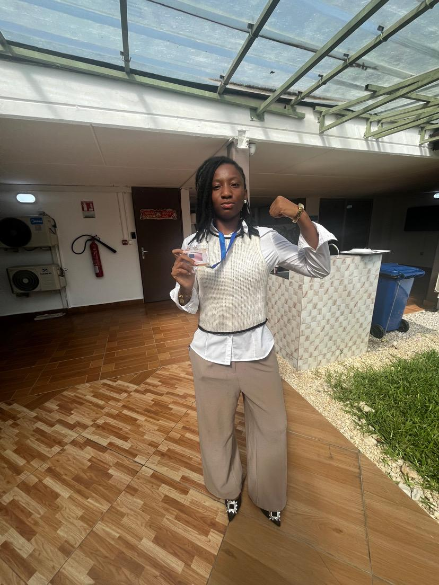

🖤Not cool.Just real
I’m Epiphanie. And I don’t fit in boxes, I redesign them. This profil isn’t about being perfect, aesthetic, or “that girl.” It’s about becoming someone authentic and sometimes awkward. I dream big. Not the kind of big people clap for immediately, but the kind that makes people pause… and then watch. I’ve always felt like I was slightly out of place, not because I didn’t belong, but because I wasn’t meant to stay small.This space is mine. A place where I document the process: the ambition, the doubts, the discipline, the evolution. If you’re looking for someone polished, this might not be your place.But if you’re looking for someone becoming — welcome. And maybe, in some way, you’ll see yourself in the process too.


✨Things that keep me awake at 3AM
I love multimedia content creation, vlogging, and documentary filmmaking. Mainly I’m interested in things that build worlds. Economics. Politics. Global systems.Culture. The way decisions made in one room can affect millions of lives somewhere else. I like understanding how things work. And even more, how to make them work for me. You’ll find me thinking about development, inequality, global strategy… and then switching to branding, personal image, and self-construction. Because in the end, it’s all connected.



🧠 I don’t just dream, I make it real (at least I try)
don’t believe in waiting to become “ready.” I’ve taken leadership roles.Worked on projects that required vision, structure, and resilience.From academic challenges to creative projects,everything I do has one goal: evolution. Not perfection. Progress.


🔮Where I’m going (watch closely)
I’m not building a small life. I see myself in global institutions. In rooms where decisions shape economies and futures. I want impact. Influence. Scale. But beyond titles — I want legacy. The kind that leaves a mark on systems, not just people. This blog? It’s not the final version of me. It’s the documentation of the rise. Stay. Watch. Or catch up later.